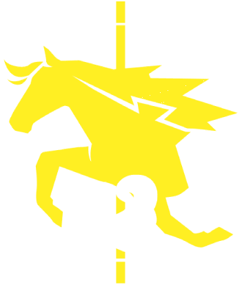

Don Quixote

“¡Por alcanzar la estrella inalcanzable!”
"To reach the unreachable star!"
Don Quixote (Hangul: 돈키호테, Don khihothe)
Don Quixote, nome real: Sancho foi designada como a Sinner #3 do departamento da LCB(Limbus Company Bus)
Sobre
Não há sinner que supere a paixão dela. Ávida fã de tudo relacionado aos Fixers, ela se enfeita com uma variedade de produtos da franquia. Eles não afetam seu desempenho em combate, então não há necessidade de impedi-la de manter seus adornos.
Ela está profundamente imersa no papel de uma Fixer justa, daí os trejeitos exagerados, semelhantes aos de uma atriz. (Será que isso já existiu de verdade?)
Recomenda-se entrar na brincadeira dela para uma missão tranquila.